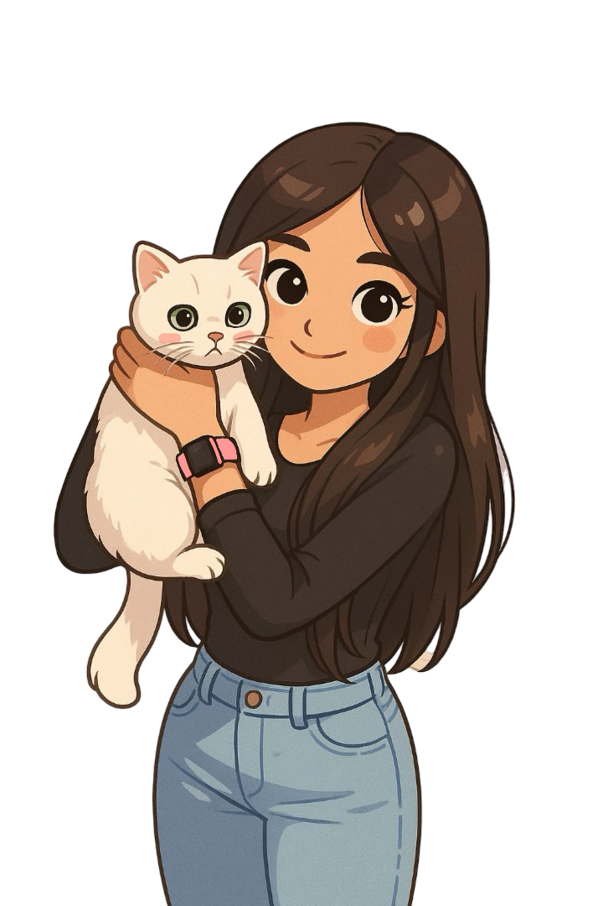

my name is shehrina hossain and i’m currently a fourth year student @ western university (rollll stangs 🤟) completing my honours bsc in computer science w/ a minor in software engineering! i'm an incoming summer 2026 software engineering intern @ confluent, joining the kafka - kora orchestration team. in the past, i was a cloud platform engineer intern @ league (summer 2025), working w/ tools like terraform, gcp, aws, and python, and i did an 8-month software engineering internship @ scotiabank (sept 2025 – april 2026), working within the global wealth management team. i love all things cloud & backend, and have a current growing interest in ai & ml.
aside from working and coding, some of my favourite things are cats, salmon sashimi, and stardew valley.
for more info about me, feel free to look through my resume and some of my portfolio! my contact info can also be found on this site, i’m always open to chatting about new opportunities :)
resume